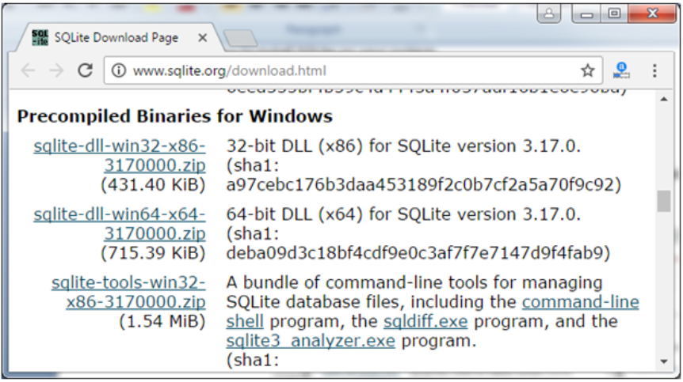
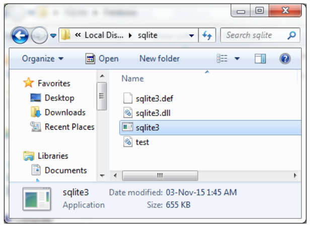
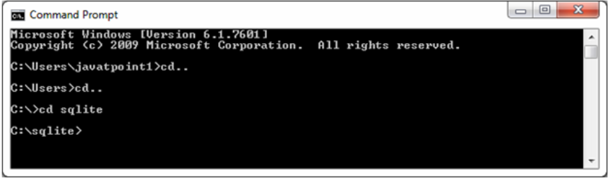
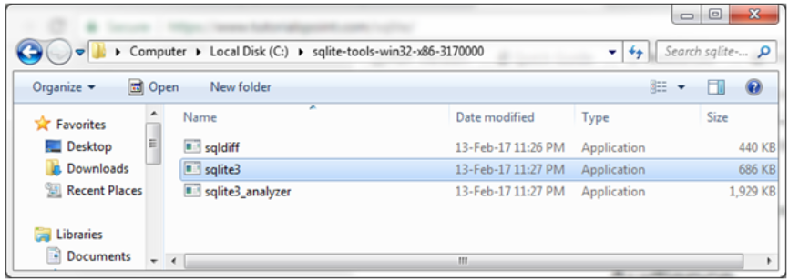
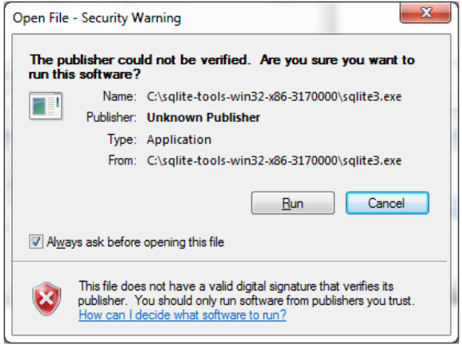
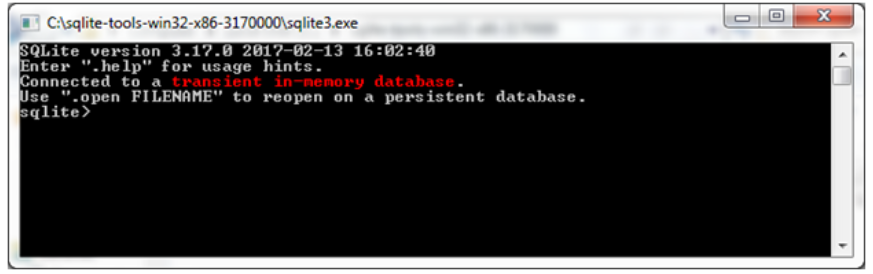

SQLite est libre d’utiliser à des fins commerciales ou privées. En d’autres termes, « SQLite est un moteur de base de données relationnelle de transaction open source, à configuration zéro, autonome, autonome, conçu pour être incorporé dans une application ». SQLite est différent des autres bases de données SQL car contrairement à la plupart des autres bases de données SQL, SQLite n’a pas de processus serveur distinct. Il lit et écrit directement dans les fichiers de disque ordinaires.



Ou encore



La diference est qu'ici les fichier sont enregistrés temporairement et on a pas besoin de specifier les chemins